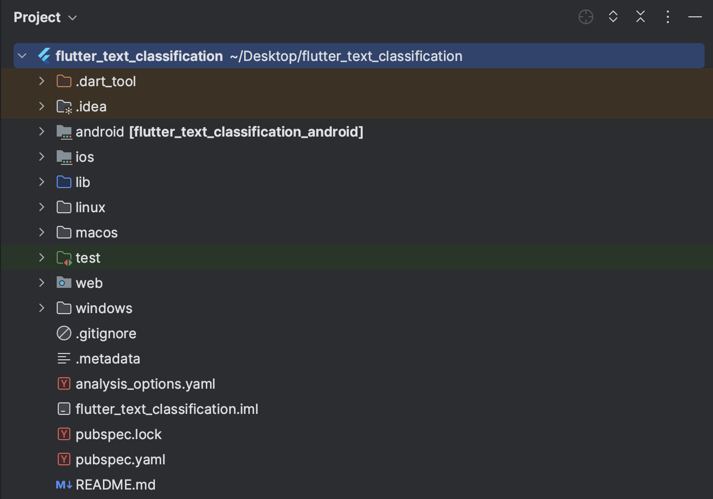
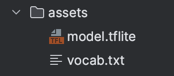
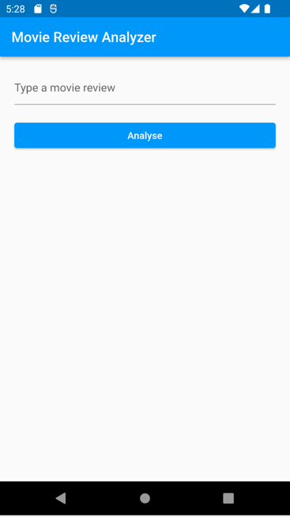

Welcome to the workshop Building text classifier with Flutter and TFLite. In this workshop, we will learn how to build an NLP classifier using Flutter and TensorFlow Lite. We'll cover
- Machine Learning basics
- Setting up development environment
- Writing a simple Flutter application, and
- Integrating TensorFlow Lite.
We will use a pre-trained Tensorflow Lite Model. By the end, you'll have the skills to build more sophisticated cross-platform applications with machine learning capabilities.
What we will build

What will you need?
- A positive attitude
- Laptop (Windows/Linux/Mac)
What is Flutter
Flutter is a free and open-source cross-platform application development framework created by Google. It allows developers to build high-quality, cross-platform apps for Android, iOS, macOS, Linux, Windows and Web platforms using a single codebase. Flutter uses the Dart programming language and provides a rich set of pre-built widgets that are customizable to fit your design needs. It also includes a powerful set of tools and features such as hot-reload for rapid development, platform-specific APIs, and easy integration with backend services. Whether you're a beginner or an experienced developer, Flutter makes it easy to create beautiful, performant, and engaging mobile apps.
Why Flutter?
Here are a few reasons why you might want to consider using Flutter for your mobile app development:
- Cross-platform development: Flutter allows you to build high-quality, natively compiled apps for both several platforms with a single codebase. This means you can save time and resources on development and maintenance of two separate codebases.
- Fast development: Flutter's hot-reload feature allows you to see the changes you make to your code in real-time, making the development process faster and more efficient.
- Rich set of pre-built widgets: Flutter comes with a wide range of customizable widgets that can help you create beautiful and responsive user interfaces.
- High-performance: Flutter's Dart programming language and native compilation enable it to deliver high performance, even on older devices.
- Easy to learn: Flutter's easy-to-understand syntax and extensive documentation make it accessible to developers of all skill levels.
- Growing community: Flutter has a rapidly growing community of developers who are constantly creating new packages, plugins, and widgets, which means you can benefit from a rich ecosystem of tools and resources.
Overall, if you're looking for a flexible, fast, and efficient way to build high-quality cross-platform apps, Flutter is definitely worth considering.
Environment Setup
Setting up your Flutter development environment involves installing Flutter, configuring your IDE, setting up your Android/iOS devices or emulators, configuring your PATH environment variable, and verifying your installation using the flutter doctor command.
We will follow the official guide to configure our development environment
Create a new flutter project
flutter create flutter_text_classification
Above command will generate the boilerplate flutter project. Open the project folder with your favorite IDE. The folder structure will look something like below

Tensorflow
TensorFlow is an open-source software library used for building and training machine learning models. It can be used for a wide range of applications such as image recognition, speech recognition, and even playing games. TensorFlow is highly scalable and can run on a variety of devices, including CPUs, GPUs, and TPUs.
Tensorflow Lite
TensorFlow Lite, on the other hand, is a lightweight version of TensorFlow that is designed to run on mobile and embedded devices with limited computing power. It's optimized for running machine learning models on mobile devices such as smartphones and tablets, and can be used for a variety of applications, including object detection, face recognition, and even predictive text input.
TensorFlow Lite offers several benefits, including:
- Reduced model size: TensorFlow Lite models are optimized for mobile and embedded devices, which means they are smaller and use fewer resources than their full-scale TensorFlow counterparts.
- Faster inference: TensorFlow Lite models are designed to run faster on mobile and embedded devices, making them ideal for real-time applications like object detection or face recognition.
- Lower power consumption: TensorFlow Lite models use less power than their full-scale counterparts, which is important for battery-powered devices like smartphones and wearables.
- Flexibility: TensorFlow Lite models can be easily integrated into mobile apps or embedded systems, making it easy to add machine learning capabilities to existing applications.
- Privacy: TensorFlow Lite can be used to build models that run locally on a device, which means that data does not need to be sent to the cloud for processing, enhancing privacy and security.
Overall, TensorFlow Lite is a powerful tool for anyone looking to build machine learning models for mobile and embedded devices. It offers several benefits that make it an ideal choice for developers who want to build efficient, fast, and flexible machine learning models that can run on a variety of devices.
TensorFlow Lite provides a simple and efficient way to convert TensorFlow models into a format that can be run on mobile and embedded devices. The conversion process optimizes the model for deployment on devices with limited computational resources, resulting in smaller and faster models. TensorFlow Lite also provides tools for quantizing models, reducing the number of bits needed to represent model parameters, further reducing model size and increasing inference speed. Overall, converting TensorFlow models to TensorFlow Lite enables developers to deploy machine learning models on a wide range of devices, including smartphones, wearables, and IoT devices, and provides a faster and more efficient user experience.
The model used in this workshop is TFLite version of this.
Overview
TensorFlow Lite Flutter plugin provides a flexible and fast solution for accessing TensorFlow Lite interpreter and performing inference. The API is similar to the TFLite Java and Swift APIs. It directly binds to TFLite C API making it efficient (low-latency).
Key Features
- Multi-platform Support for Android, iOS, Windows, Mac, Linux.
- Flexibility to use any TFLite Model.
- Acceleration using multi-threading and delegate support.
- Similar structure as TensorFlow Lite Java API.
- Inference speeds close to native Android Apps built using the Java API.
- You can choose to use any TensorFlow version by building binaries locally.
- Run inference in different isolates to prevent jank in UI thread.
Installation
tflite_flutter requires setting up tensorflow libraries for various environments. To do this, we will follow official plugin guidelines
Model & Vocab
tflite_flutter plugin allows us to load a tflite model from file system.
Let's download the Tensorflow Lite Model and Vocabulary
We will place the downloaded model in assets folder at our project root.
For simplicity, we will rename the model to model.tflite.

Duration 0:10:00
Everything is a Widget
Widgets are the building blocks of a Flutter application and represent the visual elements on the screen, such as buttons, text, images, and more.
Some basic widgets in Flutter include:
Text: used to display text on the screenImage: used to display images on the screenContainer: used to group other widgets together and provide padding and marginRowandColumn: used to lay out widgets horizontally or verticallyButton: used to create interactive buttons that respond to user inputTextField: used to allow users to input textScaffold: used to provide basic app layout elements, such as an app bar and navigation drawer.
Widgets can also be customized by changing their properties, such as font size, color, and background color, to match the design of the application.
Flutter widgets are organized in a hierarchy, with the top-level widget representing the entire screen and nested widgets representing the individual elements on the screen. This makes it easy to create complex layouts and user interfaces.
Stateless Widget
In Flutter, a StatelessWidget is a type of widget that represents a piece of the user interface that does not change over time. This means that it has no internal state and does not update itself in response to user interactions or changes in data.
A common use case for a StatelessWidget is to display static content that does not need to be updated, such as text, images, or icons. To create a StatelessWidget in Flutter, you need to create a class that extends the StatelessWidget class and override the build method. The build method returns a Widget that describes the visual elements of the user interface.
Here is an example of a StatelessWidget that displays a piece of text:
class MyTextWidget extends StatelessWidget {
@override
Widget build(BuildContext context) {
return Text(
'Hello, World!',
style: TextStyle(fontSize: 24),
);
}
}
In this example, we define a new class called MyTextWidget that extends the StatelessWidget class. In the build method, we return a Text widget that displays the text "Hello, World!" with a font size of 24.
Stateful Widget
A StatefulWidget is a type of widget that can change its internal state during its lifetime. This means that a StatefulWidget can be updated in response to user interactions or changes in data.
A common use case for a StatefulWidget is to display dynamic content that can change over time, such as a list of items or a form. To create a StatefulWidget in Flutter, you need to create a class that extends the StatefulWidget class and override two methods: createState and build.
The createState method returns a State object that manages the internal state of the widget, while the build method returns a Widget that describes the visual elements of the user interface.
Here is an example of a StatefulWidget that displays a counter and increments it when a button is pressed:
class MyCounterWidget extends StatefulWidget {
const MyCounterWidget({super.key});
@override
State<MyCounterWidget> createState() => _MyCounterWidgetState();
}
class _MyCounterWidgetState extends State<MyCounterWidget> {
int _counter = 0;
void _incrementCounter() {
setState(() {
_counter++;
});
}
@override
Widget build(BuildContext context) {
return Column(
children: [
Text(
'Counter: $_counter',
style: TextStyle(fontSize: 24),
),
ElevatedButton(
onPressed: _incrementCounter,
child: Text('Increment'),
),
],
);
}
}
Below Flutter code creates a user interface with a blue material theme and disabled debug banner, containing a text input box and a button for analyzing a movie review.
The code sets up a MaterialApp widget with the specified theme and debug banner settings, and sets the home screen to be a Scaffold widget. The body of the Scaffold widget arranges its child widgets in a vertical column. The Column widget is given a padding of 20 units on all sides.
Inside the Column widget, there is a TextField widget that provides a text input box for the user to type in a movie review. Below the text input box, there is an ElevatedButton. This button is used to trigger an action when the user wants to analyse the movie review that they have entered. The onPressed callback of the ElevatedButton widget can be used to define the logic for the analyse button press.
Replace the contents of main.dart in your lib folder with the code below.
import 'package:flutter/material.dart';
void main() {
runApp(const TextClassifierApp());
}
class TextClassifierApp extends StatefulWidget {
const TextClassifierApp({super.key});
@override
State<TextClassifierApp> createState() => _TextClassifierAppState();
}
class _TextClassifierAppState extends State<TextClassifierApp> {
@override
Widget build(BuildContext context) {
return MaterialApp(
debugShowCheckedModeBanner: false,
theme: ThemeData(
primarySwatch: Colors.blue,
),
home: Scaffold(
appBar: AppBar(
title: const Text('Movie Review Analyzer'),
),
body: Padding(
padding: const EdgeInsets.all(20),
child: Column(
crossAxisAlignment: CrossAxisAlignment.stretch,
children: [
const TextField(
decoration: InputDecoration(
hintText: 'Type a movie review',
),
),
const SizedBox(height: 20),
ElevatedButton(
onPressed: () {
// Analyse button on press logic goes here
},
child: const Text('Analyse'),
),
],
),
),
),
);
}
}
Running the flutter app
It's time to run the flutter app and see it in action. To launch the application:
- Open your Flutter project in Visual Studio Code.
- Ensure that you have installed the Flutter extension in Visual Studio Code. If not, install the Flutter extension by going to the Extensions tab on the left sidebar and searching for "Flutter".
- Open the
main.dartfile. - Select your Android or iOS emulator
- Press F5 or select "Run" from the Run menu in the top toolbar of Visual Studio Code.
That's it! You have now launched your Flutter application using the VS Code Flutter extension.

You can make changes to your code and see them reflected in your app in real-time using Hot Reload, which is enabled by default in Flutter.
To analyse the text (movie review) entered by user, we need to build a Classifier which will tokenize the input text, create an interpreter from our download tflite model and then run the classification.
Create a new file classifier.dart inside lib folder and enter the below code.
import 'package:flutter/foundation.dart';
import 'package:flutter/services.dart';
// Import tflite_flutter
import 'package:tflite_flutter/tflite_flutter.dart';
class Classifier {
// name of the model file
final _modelFile = 'model.tflite';
final _vocabFile = 'vocab.txt';
// Maximum length of sentence
final int _sentenceLen = 256;
final String start = '<START>';
final String pad = '<PAD>';
final String unk = '<UNKNOWN>';
late Map<String, int> _dict;
// TensorFlow Lite Interpreter object
late Interpreter _interpreter;
Classifier() {
// Load model when the classifier is initialized.
_loadModel();
_loadDictionary();
}
void _loadModel() async {
// Creating the interpreter using Interpreter.fromAsset
_interpreter = await Interpreter.fromAsset(_modelFile);
if (kDebugMode) {
print('Interpreter loaded successfully');
}
}
void _loadDictionary() async {
final vocab = await rootBundle.loadString('assets/$_vocabFile');
var dict = <String, int>{};
final vocabList = vocab.split('\n');
for (var i = 0; i < vocabList.length; i++) {
var entry = vocabList[i].trim().split(' ');
dict[entry[0]] = int.parse(entry[1]);
}
_dict = dict;
if (kDebugMode) {
print('Dictionary loaded successfully');
}
}
List<double> classify(String rawText) {
// tokenizeInputText returns List<List<double>>
// of shape [1, 256].
List<List<double>> input = tokenizeInputText(rawText);
// output of shape [1,2].
var output = List<double>.filled(2, 0).reshape([1, 2]);
// The run method will run inference and
// store the resulting values in output.
_interpreter.run(input, output);
return [output[0][0], output[0][1]];
}
List<List<double>> tokenizeInputText(String text) {
// Whitespace tokenization
final tokens = text.split(' ');
// Create a list of length==_sentenceLen filled with the value <pad>
var vec = List<double>.filled(_sentenceLen, _dict[pad]!.toDouble());
var index = 0;
if (_dict.containsKey(start)) {
vec[index++] = _dict[start]!.toDouble();
}
// For each word in sentence find corresponding index in dict
for (var tok in tokens) {
if (index > _sentenceLen) {
break;
}
vec[index++] = _dict.containsKey(tok)
? _dict[tok]!.toDouble()
: _dict[unk]!.toDouble();
}
// returning List<List<double>> as our interpreter input tensor expects the shape, [1,256]
return [vec];
}
}
When the user enters the text and taps the button, we can read the entered review and use classify() to get the classification probabilities.
final Classifier _classifier = Classifier();
final predictions = _classifier.classify("entered review");
final negative_prob = predictions[0];
final positive_prob = predictions[1];
To read the input from the TextField, we can use TextEditingController. TextEditingController allows us to programmatically interact with the TextField.
final TextEditingController _controller = TextEditingController();
TextField(
...
controller: _controller)
We will create two state variables review and predictions to update the UI
String review = "";
List<double> predictions = [];
To handle the pressed event of ElevatedButton, onPressed parameter can be used. We will read the input, perform classification and finally update the state.
ElevatedButton (
onPressed: () {
setState(() {
review = _controller.text;
predictions = _classifier.classify(review);
});
_controller.clear();
})
We can then display the updated state values using Card widget.
Card(
children: <Widget>[
ListTile(
title: Text('Review: $review'),
subtitle: Text('Positive: ${predictions[1].toStringAsFixed(4)}\nNegative: ${predictions[0].toStringAsFixed(4)}')),
],
)
Below is how the final main.dart should look like:
import 'package:flutter/material.dart';
import 'classifier.dart';
void main() {
runApp(const TextClassifierApp());
}
class TextClassifierApp extends StatefulWidget {
const TextClassifierApp({super.key});
@override
State<TextClassifierApp> createState() => _TextClassifierAppState();
}
class _TextClassifierAppState extends State<TextClassifierApp> {
final TextEditingController _controller = TextEditingController();
final Classifier _classifier = Classifier();
String review = "";
List<double> predictions = [];
@override
void initState() {
super.initState();
}
@override
Widget build(BuildContext context) {
return MaterialApp(
debugShowCheckedModeBanner: false,
theme: ThemeData(
primarySwatch: Colors.blue,
),
home: Scaffold(
appBar: AppBar(
title: const Text('Movie Review Analyzer'),
),
body: Padding(
padding: const EdgeInsets.all(20),
child: Column(
crossAxisAlignment: CrossAxisAlignment.stretch,
children: [
TextField(
decoration: const InputDecoration(
hintText: 'Type a movie review',
),
controller: _controller,
),
const SizedBox(height: 20),
ElevatedButton(
child: const Text('Analyse'),
onPressed: () {
setState(() {
review = _controller.text;
predictions = _classifier.classify(review);
});
_controller.clear();
}),
const SizedBox(height: 20),
if (predictions.length == 2)
Card(
color: predictions[1] > predictions[0]
? Colors.lightGreen
: Colors.red,
child: Column(
mainAxisSize: MainAxisSize.min,
children: <Widget>[
ListTile(
leading: const Icon(Icons.question_answer_outlined),
title: Text(
'Review: $review',
style: const TextStyle(fontSize: 20, color: Colors.white),
),
subtitle: Text(
'Positive: ${predictions[1].toStringAsFixed(4)}\nNegative: ${predictions[0].toStringAsFixed(4)}',
style: const TextStyle(fontSize: 15, color: Colors.white),
)),
],
),
)
else
Container()
],
),
),
),
);
}
}
That's it, the application is now ready to be tested.